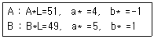
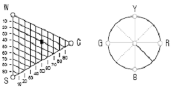

컬러리스트산업기사 (2007-03-04 기출문제)
1과목: 색채심리
1. 색채 선호의 원리를 설명한 것 중 틀린 것은?
- 남성과 여성의 선호색이 다른 경우가 많다.
- 색채 선호도는 세월에 따라 변화한다.
- 제품의 종류에 관계없이 선호색은 적용된다.
- 색채 선호도는 연령에 따라 다르게 나타난다.
(정답률: 알수없음)

2. 노랑의 보조 색으로 강한 대비 효과를 주어 안전 색채의 기능을 갖는 가장 적합한 색은?
- 파랑
- 주황
- 녹색
- 검정
(정답률: 알수없음)
3. 다음 중 색채 조절의 목적과 비교적 거리가 먼 것은?
- 마음의 안정
- 눈의 피로회복
- 조형적 아름다움
- 일의 능률향상
(정답률: 알수없음)
4. 민트(박하)쵸콜릿을 위한 포장지를 선택 하려고 할때 내용물의 이미지를 가장 적절하게 표현할 수 있는 색상의 조화는?
- 노랑과 은색
- 초콜릿브라운과 검정
- 노랑과 검정
- 녹색과 은색
(정답률: 알수없음)
5. 국기에 사용된 색채에 관한 사항 중 틀린 것은?
- 각 나라의 국기에 사용된 색채의 상징은 동일하다.
- 프랑스 국기의 3색은 자유, 평등, 박애를 상징한다.
- 국기의 색채와 함께 민족적 색채로 인지되는 색채가 있다.
- 국기는 국제 언어로 인지되는 색채이다.
(정답률: 알수없음)
6. 원래는 오랑주가문의 휘장과 상징 색이었던 오렌지색을 국민들이 좋아하여 상징색으로 한 나라는?
- 미국
- 덴마크
- 노르웨이
- 네덜란드
(정답률: 알수없음)
7. 지역색(local color)의 개념을 제시하고 이미지를 부각 시키는데 중요한 역할을 한 색채연구가는?
- 페흐너
- 몬드리안
- 고바야시
- 랑크로
(정답률: 알수없음)
8. '산이나 바다와 같은 지형적 요소, 태양의 조사 시간이나 청명일수, 토양의 색' 등 지리적, 기후적 환경에 의해 자연스럽게 어울리고 선호되는 색채는?
- 지역색
- 민족색
- 인류색
- 종교색
(정답률: 90%)
9. 무채색, 금색, 은색 등의 색을 삽입하여 배색의 미적 효과를 높일 수 있는 배색은?
- 반대 색상 배색
- 톤 온 톤 배색
- 톤 인 톤 배색
- 세퍼레이션 배색
(정답률: 알수없음)
10. 뉴턴은 색채와 소리의 조화론에서 일곱 가지의 색을 칠음계에 연계 시켰다. 다음의 “예”에서 색채가 지닌 공감각적인 특성이 잘못된 것은?
- 노랑 - 음계 '미'
- 빨강 - 음계 '도'
- 파랑 - 음계 '솔'
- 녹색 - 음계 '시'
(정답률: 알수없음)
11. 모더니즘의 대두와 함께 주목을 받게 된 색은?
- 빨강과 자주
- 노랑과 청색
- 흰색과 검정색
- 베이지색과 카키색
(정답률: 알수없음)
12. 황혼일 때, 또는 박명시의 경우 가장 잘 보이는 색은?
- 노랑
- 파랑
- 자주
- 분홍
(정답률: 알수없음)
13. 회화기법의 키아로스쿠로(Kiaroscuro)나그리자일 (Grisaill)과 같은 종류의 배색법으로 동일, 인접, 유사 색상의 범위에서 명도차를 두어 배색하는 기법은?
- 토널 배색
- 톤 인 톤 배색
- 톤 온 톤 배색
- 포 까마이외 배색
(정답률: 알수없음)
14. 다음 배색의 사례 중 바르지 못한 것은?
- 명확하고 명쾌한 배색을 위해서는 명도차를 크게하여 배색한다.
- 유사한 색상으로 배색할 때에는 명도차, 채도차를 비슷하게 하여 조화 되게 한다.
- 채도차가 큰 배색에서는 색의 면적을 조절하여 안정된 느낌을 갖도록 한다.
- 화려하고 강렬한 느낌의 배색을 위해서는 색상차를 크게 하여 배색한다.
(정답률: 알수없음)
15. 색채와 다른 감각간의 교류현상은?
- 공간감각
- 공간지각
- 공감각
- 연결지각
(정답률: 알수없음)
16. 다음 중 가장 화려한 느낌을 주는 배색은?
- deep 톤의 한색
- pale 톤의 한색
- vivid 톤의 난색
- dark 톤의 난색
(정답률: 알수없음)
17. 배색의 효과에 대한 설명 중 적절하지 않은 것은?
- 회색과 흰색의 배색에 선명한 빨간색을 강조 색으로 활용하여 경쾌한 느낌을 주었다.
- 회색 띤 파랑, 밝은 파랑, 진한 파랑을 이용하여 점진적이고 연속적인 느낌의 배색을 하였다.
- 짙은 회색, 은색, 짙은 파란색을 이용하여 도시적이고 사무적인 느낌의 배색을 하였다.
- 밝은 노란색, 밝은 분홍색, 밝은 자주색을 아용하여 개구쟁이 소년의 활동적인 느낌을 주었다.
(정답률: 알수없음)
18. 석유나 가스의 저장탱크를 흰색이나 은색으로 칠하는 이유는?
- 흡수율이 높은색 이므로
- 팽창성이 높은색 이므로
- 반사율이 높은색 이므로
- 수축성이 높은색 이므로
(정답률: 알수없음)
19. 다음 색의 연상에 관한 설명 중 잘못된 것은?
- 빨강, 주황은 식욕을 증진시키는데 효과적인 색이다.
- 검정색은 죽음을 연상 시키므로 산업제품의 색으로는 부적합하다.
- 금속색은 첨단적, 현대적인 이미지를 나타낸다.
- 파랑, 하늘색 등은 일반적으로 청결한 이미지를 나타낸다.
(정답률: 알수없음)
20. 다음 중 연결이 잘못된 것은?
- 예리한 음 - 순색에 가까운 밝고 선명한 색
- 높은 음 - 갈색기를 띤 노랑
- 낮은 음 - 저명도, 저채도의 어두운 색
- 탁음 - 채도가 낮은 무채색
(정답률: 알수없음)
2과목: 색채디자인
21. 다음 중 차가운 느낌을 주는 색은?
- 연두색
- 보라색
- 청록색
- 노란색
(정답률: 알수없음)
22. 제품의 라이프사이클을 순서대로 나열한 것은?
- 성숙기 - 도입기 - 성장기 - 쇠퇴기
- 도입기 - 성장기 - 성숙기 - 쇠퇴기
- 쇠퇴기 - 도입기 - 성숙기 - 성장기
- 도입기 - 성숙기 - 성장기 - 쇠퇴기
(정답률: 알수없음)
23. 다음 중 장소의 특성에 부합하는 색채는?
- 주택 : 보라색 계열의 색채
- 사무실 : 노란색 계열의 색채
- 학교 : 빨간색 계열의 색채
- 병원 청록색 계열의 색채
(정답률: 알수없음)
24. 다음 중 마케팅믹스를 위한 4P가 아닌 것은?
- price
- place
- prime
- product
(정답률: 알수없음)
25. 디스플레이디자인(Display Design)에 대한 설명 중 잘못된 것은?
- 물건을 공간에 배치, 구성, 연출하여 사람의 시선을 유도하는 강력한 이미지 표현이다.
- 디스플레이의 구성 요소는 상품, 고객, 장소, 시간이다.
- P.O.P.(Point of Purchase)는 비상업적 디스플레이에 활용된다.
- 시각 전달 수단으로서의 디스플레이는 사람, 물체, 환경을 상호 연결시킨다.
(정답률: 알수없음)
26. 기계가 지닌 차갑고 역동적인 아름다움을 조형예술의 주제로까지 높이고, 스피드감이나 운동을 표현하기 위해시간의 요소를 도입하려고 시도한 예술운동은?
- 구성주의
- 미래주의
- 미니멀리즘
- 옵아트
(정답률: 알수없음)
27. 형태와 기능을 분리시켜 보지 않고 포괄적 의미로 파악하여 복합기능이라고 규정한사람은?
- 루이스 설리반
- 빅터 파파넥
- 윌리엄 모리스
- 모홀리 나기
(정답률: 알수없음)
28. 시장세분화(market segmentation)의 방법이 아닌것은?
- 연령, 성별, 수입, 직업별로 나누는 인구학적세분화
- 지역, 도시크기, 인구밀도 등으로 나누는 지리적세분화
- 문화, 종교, 사회계층 등으로 나누는 사회문화적세분화
- 제품의 색상이나 외관 등에 의한 이미지세분화
(정답률: 알수없음)
29. 1981년 스웨덴의 하드(Hard)와 시빅(Sivik)에 의해 개발되어 스웨덴과 유럽의 몇 몇 국가에서 국제표준 표색계로 채택한 것은?
- PCCS
- KS
- NCS
- L*a*b*
(정답률: 알수없음)
30. 다음 중 의상디자인을 결정하는 주요 요소가 아닌것은?
- 소비자의 욕구
- 디자이너의 스타일
- 시대적 유행
- 대량생산
(정답률: 알수없음)
31. 색채계획의 배색방법으로 적합하지 않은 것은?
- 주조색은 가장 넓은 면을 차지하며 전체적인 색채 효과를 좌우한다.
- 보조색은 50%정도의 사용이 적절하다.
- 강조색은 대비적으로 사용하거나 명도나 채도의 변화를 준다.
- 강조색은 디자인대상을 변화시키는데 용이하다.
(정답률: 알수없음)
32. 소비자들에 의해 그 제품이 어떻게 인지되는가를 중심으로 소비자들의 마음속에 차지하는 제품의 위치를 뜻하는 것은?
- 마케팅 믹스
- 차별적 우위
- 시장 세분화
- 제품 포지셔닝
(정답률: 알수없음)
33. 정원에서 같은 모양의 꽃이라도 모여있는 꽃은 따로 떨어져 있는 꽃보다 눈에 잘 띤다고 할 때 해당되는 시지각횬상은?
- 폐쇄성
- 근접성
- 지속성
- 유사성
(정답률: 알수없음)
34. 바우하우스에 대한 설명으로 틀린 것은?
- 바이마르의 바우하우스교육의 중심적인 인물은 이텐(itten, johannes)이다.
- 대량생산과 단순하고 합리적인 양식등 디자인의 근대화를 추구한다.
- 예술창작과 공학기술의 통합을 주장한 새로운 교육기관이며 연구소이다.
- 현대건축, 회화, 조각, 디자인운동에 영향을 주었다.
(정답률: 알수없음)
35. 디자인의 조건이 아닌 것은?
- 심미성
- 독창성
- 합목적성
- 조직성
(정답률: 알수없음)
36. 영국의 공예가로 예술의 민주화, 예술의 생활화를 주장해 근대디자인의 이념적 기초를 마련한 사람은?
- 찰스 레니 매킨토시
- 윌리엄 모리스
- 허버트 맥네어
- 오브리 비어즐리
(정답률: 알수없음)
37. 다음 내용 중 색과제품의 연결이 가장 합리적인 것은?
- 자동차와 같이 빠른속도를 가진 물체의 색은 명시도가 낮아야 눈을 자극하지 않아서 좋다.
- 방화, 멈춤과 같은 급하고 위험한 곳을 나타내는 표지판에는 황색을 사용하는 것이 가장 좋다.
- 자연주의를 지향하는 제품에서는 나무를 연상케 하는 녹색이나 갈색과 같은 색을 사용하는 것이 좋다.
- 무거운 기계류나 물품에 적용하는 색은 심리적으로 가볍게 느낄 수 있도록 청색을 사용하는 것이 좋다.
(정답률: 알수없음)
38. 여러 가지 아이디어 발상법 중 시네틱스법 (syneticsmethod)에 대한 설명으로 옳은 것은?
- 일정한 테마에 관하여 구성원들이 자유로운 토론, 연상으로 아이디어를 얻는 방법이다.
- 2개 이상의 서로 관련없어 보이는 요소, 또는 유사한 것끼리의 요소를 결합하거나 합성하여 아이디어를 찾아내는 방법이다.
- 연상을 위한 키워드를 정하고 연상되는 것을 테마에 연결시켜 컨셉을 구하는 방법이다.
- 문제의 해결을 위한 항목들을 모두 나열한 후 항목별로 문제점을 검토하면서 아이디어를 구상하는 방법이다.
(정답률: 알수없음)
39. 국제유행색협회(International Commission for Fashionand Textile Colors)에 대한 설명으로 잘못된 것은?
- 1963년에 설립 되었다.
- 3년 후의 색채 방향을 분석하고 제안한다.
- S/S, F/W의 두 분기로 유행색을 예측 제안한다.
- 매년 1월과 7월말에 협의회를 개최한다.
(정답률: 알수없음)
40. 패키지디자인의 기능과 거리가 먼 것은?
- 신뢰성
- 보호와 보존성
- 편리성
- 상품성
(정답률: 알수없음)
3과목: 섹채관리
41. 색역이 다른 두 장치사이의 색채를 효율적으로 대응시켜 색채영상이 같은 느낌이 나도록 하는기술은?
- 색채일치 (color matching)
- 색영역맵핑 (Color Gamut Mapping)
- 색채순응 (chromatic adaptation)
- 색분해 (color decomposition)
(정답률: 알수없음)
42. 오목판 인쇄방식으로 그라데이션 효과가 풍부하여 사진 인쇄에 가장 적합한 인쇄방식은?
- 패드인쇄
- 평판인쇄
- 프린트배선인쇄
- 그라비어인쇄
(정답률: 알수없음)
43. 그래픽카드를 이용하여 모니터에서 디지털 색채 영상을 구성하는데 사용되는 최소단위는?
- 픽셀 (pixel)
- 라인센서 (line sensor)
- 바이트 (byte)
- 비트맵 (bitmap)
(정답률: 알수없음)
44. 육안조색시 필요한 조건이 아닌 것은?
- 색채관측을 할 때에는 조명환경, 빛의 환경, 조명의 세기 등을 사전에 검토한다.
- 조명부스의 내면은 원칙적으로 무광택이며, 명도 V가 5 - 8인 무채색으로 한다.
- 작업면에서의 조도는 약100Lux 정도가 가장적당하다.
- 조명의 방향은 시료면 및 표준면의 법선방향을 중심으로 하여 확산적으로 조명한다.
(정답률: 알수없음)
45. 측색데이터를 사용하여 시료색을 목표색으로 유도해 나가는 조색방법을 무엇이라고 하는가?
- 자극치직독 방법
- 등간격파장 방법
- 편색판정 방법
- 선정파장 방법
(정답률: 알수없음)
46. 다음 중 CMYK 색체계를 활용하는 디바이스는?
- 디지털 카메라
- 컬러 스캐너
- 모니터
- 컬러 프린터
(정답률: 알수없음)
47. 색채 측정기의 종류 중 필터식색체계의 구조 (색측정체계)와 가장 거리가 먼 것은?
- 광원
- 콘택트 스크린
- 시료대
- 광검출기
(정답률: 알수없음)
48. 다음 중 그래픽카드의 종류에 따라 변하는 요소가 아닌 것은?
- 최대 해상도(resolution)
- 아날로그 신호화의 처리속도
- 재생주기
- 표현할 수 있는 색채의 수
(정답률: 알수없음)
49. 다음 중 간접 조명에 대한 설명으로 옳은 것은?
- 반사갓을 사용하여 광원의 빛을 모아 직접 비추는 방식
- 반투명의 유리나 플라스틱을 사용하여 광원 빛의 60 - 90 %가 대상체에 직접 조사되고 나머지가 천정이나 벽에서 반사되어 조사되는 방식
- 반투명의 유리나 플라스틱을 사용하여 광원 빛의 10 - 40 %가 대상체에 직접 조사되고 나머지가 천정이나 벽에서 반사되어 조사되는 방식
- 광원의 빛을 대부분 천정이나 벽에 부딪혀 확산된 반사광으로 비추는 방식
(정답률: 알수없음)
50. 광원과 시야에 대한 설명 중 틀린 것은?
- 좁은 면적과 넓은 면적이 색채가 다르게 보이는 것은 시야에 따라 색채가 다르게 보이기 때문이다.
- 형광등 아래에서는 난색계열보다 한색계열의 색이 살아난다.
- 광원에 따라 색차가 변하는 현상을 메타메리즘이라고 한다.
- 백열등에서 난색계통의 색상이 강렬하게 보이는 것은 광원에 단파장이 많기 때문이다.
(정답률: 알수없음)
51. 화학적성분은 스틸벤. 이미다졸. 쿠마린유도체 등이며, 소량만 사용해야하고, 어느 한도량을 넘으면 백색도가 줄고 청색이 되어버리는 염료는?
- 식용염료
- 합성염료
- 천연염료
- 형광염료
(정답률: 알수없음)
52. 다음 중 CCM(computer color matching)을 도입하는 목적과 가장 거리가 먼 것은?
- 소재의 변화에 따른 신속한 대처가 가능하다.
- 제품의 품질을 균일하게 관리하기 쉽다.
- 정확한 양으로 조색하기 때문에 원가절감을 할 수 있다.
- 소품종 대량생산에 효과적이나 오랜 경험과 기술을 필요로 하므로 미숙련자는 조색하기 어렵다.
(정답률: 알수없음)
53. 색료의 일반적인 성질에 대한 설명으로 옳은 것은?
- 안료는 착색하고자 하는 매질에 용해된다.
- 염료는 표면에 친화성을 갖는 화학성질을 가지고 있다
- 안료는 염료에 비해서 투명하고 은폐력이 약하다.
- 도료는 인쇄에만 사용되는 유색의 액체이다.
(정답률: 알수없음)
54. 다음 중 색온도 가 가장 낮은 것은?
- 주광색 형광등
- 정오의 태양
- 백열등
- 흐린날의 하늘
(정답률: 알수없음)
55. CIE에서 분류한 채도의 3단계 분류에 포함되지 않는 것은?
- chromaticness
- perceived chroma
- adaptation
- saturation
(정답률: 알수없음)
56. 디지털 컬러에서(R, G, B) 값이 (255, 0, 255)로 주어질 때의 색채는?
- white
- yellow
- cyan
- magenta
(정답률: 알수없음)
57. 최초의 합성염료로서 아닐린염료에 속하는 합성유기 염료는?
- 산화철
- 산화망간
- 모베인(모브)
- 옥소크롬
(정답률: 알수없음)
58. 다음 중 육안 조색시 필요한 준비물로 적합하지 않은 것은?
- 은폐율지
- 건조기
- 투명필름
- 정밀저울
(정답률: 알수없음)
59. 분광반사율 자체가 일치하여 어떠한 광원이나 관측자에게도 항상 같은 색으로 보이는 경우는?
- metamerism
- color inconstancy
- isomeric matching
- color appearance
(정답률: 알수없음)
60. 두 견본 A, B를 측정한 결과이다. 색차 ⊿E는 얼마인가?

- 3.0
- 4.0
- 5.0
- 6.0
(정답률: 알수없음)
4과목: 색채지각의이해
61. 여러 가지 파장의 빛이 고르게 섞여 있으면 무슨색으로 지각되는가?
- 백색
- 회색
- 검정색
- 보라색
(정답률: 알수없음)
62. 명도대비에 대한 설명 중 틀린 것은?
- 흰색배경 위의 회색이 검은색배경 위의 회색보다 밝아 보인다.
- 배경색의 명도가 낮으면 본래의 명도 보다 높아 보인다.
- 배경색의 명도가 높으면 본래의 명도 보다 낮아 보인다.
- 명도가 다른 두색이 서로 대조가 되어 두색간의 명도차가 크게 보이는 현상을 말한다.
(정답률: 알수없음)
63. 다음 중 색채 지각과 관련된 광수 용기는?
- 간상체
- 추상체
- 중심와
- 맹점
(정답률: 알수없음)
64. 조명에 의한 '청색'의 변화가 잘못 연결된 것은?
- 형광등(주광색) - 변화 없음
- 형광등(난백색) - 강한 녹색
- 백열전구 - 약한 녹색
- 수은등 - 선명한 자색
(정답률: 알수없음)
65. 다음 내용 중 가장 타당성이 낮은 것은?
- 흰색 자동차보다 검은색 자동차가 더 작아 보인다.
- 검은 바탕 위의 노랑배색은 명시도가 높다.
- 연두와 보라색은 여름용품에 사용하면 시원해 보인다.
- 적색신호등이 청색신호등 보다 더 앞으로 진출하는것 처럼 느껴진다.
(정답률: 알수없음)
66. 색상이 다른 두색을 인접시켜 배치하면 두색이 색상환에서 서로 더 멀어지려는 현상은?
- 보색대비
- 채도대비
- 명도대비
- 색상대비
(정답률: 알수없음)
67. 물감의 3원색에 관한 설명 중 틀린 것은?
- 다른 색을 섞어서는 만들 수 없는 색이다.
- 모두 혼합하면 검정색에 가까운 색이 된다.
- 물감의 3원색은 빨강, 녹색, 파랑이다.
- 빛의 3원색을 각 각 혼색 했을 때 만들어지는 중간색이 물감의 3원색이 된다.
(정답률: 알수없음)
68. 세가지색 광을 사용하여 혼합색을 만들 경우, 가장 다양한 색상을 만들어 낼 수 있는 세가지 색광은?
- 빨간색빛, 녹색빛, 노란색빛
- 빨간색빛, 노란색빛, 파란색빛
- 빨간색빛, 녹색빛, 파란색빛
- 노란색빛, 녹색빛, 파란색빛
(정답률: 알수없음)
69. 다음 중 Magenta와 Yellow의 감법혼합으로 얻어지는 색은?
- Red
- Green
- Blue
- Cyan
(정답률: 알수없음)
70. 색상이 다르더라도 두색의 명도차가 작아 색이 희미하고 불명확하게 보이는 현상은?
- 색음현상
- 푸르킨예현상
- 리프만효과
- 네온ㆍ칼라현상
(정답률: 알수없음)
71. 조명의 조건에 따라 광수용기의 민감도가 변화하는 것은?
- 지각
- 조합
- 대비
- 순응
(정답률: 알수없음)
72. 다음 색 중에서 가장 주목성이 높은 색은?
- 2.5RP 4/12
- 2.5G 5/8
- 5R 4/14
- 5Y 8/12
(정답률: 알수없음)
73. 한낮의 하늘이 푸르게 보이는 것은 빛의 어떤 현상에 의한 것 인가?
- 빛의 간섭
- 빛의 굴절
- 빛의 산란
- 빛의 편광
(정답률: 알수없음)
74. 다음 중 우울증 환자에게 가장 적합하지 않은 색은?
- 난색 계열
- 원색 빨강
- 원색 노랑
- 한색계열의 회색
(정답률: 알수없음)
75. 흑백의 반짝임을 느끼게하면 실제 무채색의 자극밖에 없는데도 유채색이 보이는 현상을 의미하는 것은?
- 순도(purity)
- 주관색(subjective colors)
- 색도(chromaticity)
- 조건등색(metamerism)
(정답률: 알수없음)
76. 다음 중 회전혼합에 대한 설명으로 틀린 것은?
- 혼합된 색의 명도는 혼합하려는 색들의 중간 명도가 된다.
- 혼합된 색상은 중간 색상이 되며, 면적에 따라 다르다.
- 보색관계 색상의 혼합은 중간 명도의 회색이 된다.
- 혼합된 색의 채도는 원래의 채도 보다 높아진다.
(정답률: 알수없음)
77. 다음 색의 경연감에 대한 느낌 중 부드럽게 느낄 수 있는 조건은?
- 채도가 낮고 명도가 낮은 색
- 채도가 낮고 명도가 높은 색
- 중명도의 차가운 색
- 채도가 높은 한색 계통의 색
(정답률: 알수없음)
78. 색의 진출과 후퇴에 대한 설명 중 틀린 것은?
- 따뜻한 색이 차가운색 보다 더 진출하는 느낌을 준다.
- 밝은 색이 어두운색 보다 더 진출하는 느낌을 준다.
- 채도가 높은 색이 채도가 낮은 색 보다 더 진출하는 느낌을 준다.
- 무채색이 유채색보다 더 진출하는 느낌을 준다.
(정답률: 알수없음)
79. 보색 및 보색대비에 대한 설명 중 틀린 것은?
- 보색은 색상환에서 마주 보고 있는 색이다.
- 음성적 잔상으로 나타나는 색이 보색이다.
- 명도 대비도 보색대비의 일종이다
- 무채색에서는 보색대비가 일어날 수 없다.
(정답률: 알수없음)
80. 겨울철 직물은 여러색의 실로 직조되어 있으나 멀리서 보면 하나의 색상으로 보이게 되는 혼색방법은?
- 가산혼합
- 병치혼합
- 계시혼합
- 감산혼합
(정답률: 알수없음)
5과목: 색채체계의이해
81. 다음중표준색체계가갖추어야할조건이아닌것은?
- 특수 안료를 이용한 재현 가능성
- 색채간의 지각적 등보성
- 색채 속성 배열의 과학적 근거
- 색채 표기의 국제 기호화
(정답률: 10%)
82. 색채 학자들의 주장으로 잘못된 것은?
- 루드(N.O.Rood) : 자연관찰에서 일정한 법칙을 찾아내어, 청색에 가까운 것은 밝고, 먼 것은 어둡다는 조화이론을 밝혔다.
- 슈브럴(M.E.Chevreul) : 동시대비원리, 도미넌트 컬러, 세퍼레이션컬러, 보색 배색조화 등의 법칙을 저술했다.
- 져드(D.B.Judd) : 색채조화는 좋아함과 싫어함의 문제이며, 정서반응은 사람에 따라 다르고, 동일인이라도 때에 따라 다르다.
- 비렌(F.Birren) : 조화란 질서라 정의하고, 제품, 비즈니스, 환경색채 등 응용분야에 적합한 이론을 발표하였다.
(정답률: 알수없음)
83. 다음 중 색채의 감성전달이 가장 우수한 체계는?
- CIE 색체계
- XYZ 색체계
- ISCC-NIST 계통색명 체계
- 오스트발트 색체계
(정답률: 알수없음)
84. 여러 가지색채 특성 중 배색을 할 때 조화를 이루기 위해 가장 중점을 두고 고려해야 하는 특성은?
- 색상
- 톤
- 명도
- 채도
(정답률: 알수없음)
85. 오스트발트표색계의 표기가 바른 것은?
- 색상기호 + 흑색량 + 백색량
- 색상기호 + 백색량 + 흑색량
- 백색량 + 흑색량 + 색상기호
- 흑색량 + 백색량 + 색상기호
(정답률: 알수없음)
86. 먼셀색체계의표기법은?
- H/VC
- HC-V
- HV/C
- H-VC
(정답률: 알수없음)
87. 다음 중 현색계의 설명으로 옳은 것은?
- 물체의 색채를 표시하는 체계로 표준색 표의 번호나 기호를 붙인다.
- 심리물리적인 빛의 혼색실험에 기초를 둔 표색계이다.
- 3개의 색광을 가법혼색에 의해서 여러 가지의 색자극에 대한 등 색을 만들 수 있다.
- 현색계의 종류에는 CIE 의XYZ, Hunter Lab 등이 있다.
(정답률: 알수없음)
88. NCS 색삼각형과 색상환에서 표시하고 있는 색의 올바른 표기방법은?

- S2⑤0 -B50R
- S2⑤0 -R50B
- S5020 -B50R
- RB -S2⑤0
(정답률: 알수없음)
89. 유사한색의 배색방법으로 특히 중명도, 중채도인 중간색 계열의 덜(dull) 톤으로 배색하는 것은?
- 회색조 배색
- 명색조 배색
- 토널(tonal) 배색
- 암색조 배색
(정답률: 알수없음)
90. 오스트발트표색계에 관한 설명 중 맞는 것은?
- 백색량(W), 흑색량(B), 순색량(C)의 합을100%로 하였기 때문에 등색상면뿐만 아니라 어떠한색 이라도 혼합량의 합은 항상 일정하다.
- 유채색 기호의 앞의 문자는 흑색량, 뒤의 문자는 백색량을 표시한다.
- 영ㆍ헬름홀츠의 3원색 이론에서 출발 하였으며, 가법 혼색의 원리가 적용된다.
- 무채색의 명도 단계는 명도0과 명도10에 해당하는 검정과 흰색은 실재하지 않으므로 보통 N1에서 1단위로 N9까지 사용하고 있다.
(정답률: 알수없음)
91. 져드(D.B.Judd)의 색채조화론과 관계없는 것은?
- 질서(order)의 원칙
- 친근성(familiarity)의 원칙
- 동류성(similarity)의 원칙
- 모호성(ambiguity)의 원칙
(정답률: 알수없음)
92. 19⑤년 미국의 화가이자 색채연구가인이 사람에 의해 창안된 표색계로, 현재 한국산업규격에 채택된 표색계의 이름은?
- 오스트발트 표색계
- 먼셀 표색계
- NCS 표색계
- PCCS 표색계
(정답률: 알수없음)
93. L* a* b* 표색계 설명으로 옳은 것은?
- L* 은 명도와 채도를 나타낸다.
- a* 값이 플러스이면 초록빛이 강해진다.
- b* 값이 플러스이면 파란빛이 강해진다.
- a* , b* 값이 커지면 채도가 증가한다.
(정답률: 알수없음)
94. 외국인들이 우리나라를 백의민족이라 부르게 된 이유로 적합하지 않은 것은?
- 근대 외국인의 내한이 많을 무렵 잦은 국상으로 백성들이 흰옷을 입었기 때문
- 색의 상징성으로 인해 밝고 깨끗한 흰색을 선호하여 즐겨 입었기 때문
- 조선시대의 유교적인 영향으로 근검절약의 정신과 선비들이 흰색을 즐겨 입었기 때문
- 잦은 흉년으로 인한 염료의 재배 면적의 축소와 염색기술의 부족 때문
(정답률: 알수없음)
95. 다음 중 '하늘색(Sky Blue)'을 나타내는 가장 가까운 L* a* b* 값은?
- L* a* b* =84/5/-18
- L* a* b* =85/-64/74
- L* a* b* =57/88/-51
- L* a* b* =56/73/34
(정답률: 알수없음)
96. 오스트발트 표색계의 기본 4가지 색은 ultramarine blue, yellow, red, ( )이다. ( )에 적합한 색상은?
- orange
- sea green
- turquoise
- purple
(정답률: 알수없음)
97. 정색과 정색의 혼합으로 생기는 오간색으로 맞는 것은?
- 적색 - 녹색 - 벽색 - 황색 - 훈색
- 적색 - 백색 - 청색 - 흑색 - 황색
- 홍색 - 벽색 - 녹색 - 유황색 - 자색
- 홍색 - 백색 - 황색 - 녹색 - 자색
(정답률: 알수없음)
98. 먼셀 색상환의 기본 구성 요소가 아닌 것은?
- 색상 (Hue)
- 명도 (Value)
- 채도 (Chroma)
- 톤 (Tone)
(정답률: 알수없음)
99. PCCS 톤 명칭과 기호가 바르게 짝지어진 것은?
- 밝은 - lt
- 연한 - sf
- 짙은 - dk
- 칙칙한 - d
(정답률: 알수없음)
100. 1997년 대한민국정부에서 발표한 태극기의 파란색의 먼셀 좌표는?
- 5B 3/12
- 5B 5/10
- 5PB 3/12
- 5PB 5/10
(정답률: 알수없음)